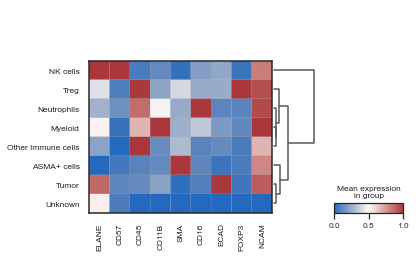
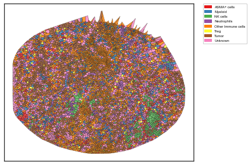
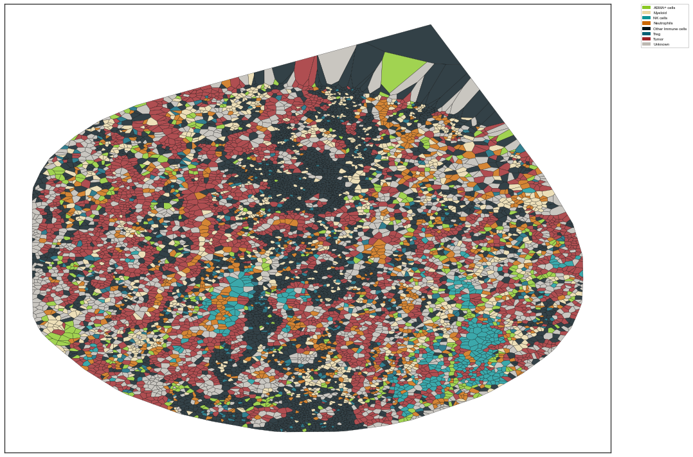
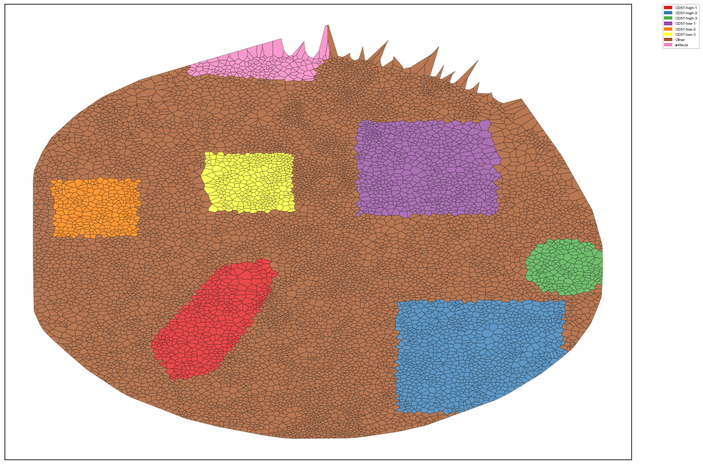

Cell-Phenotyping and adding ROIs
| """
Created on Mon May 16 19:00:32 2022
@author: Ajit Johnson Nirmal
SCIMAP tutorial May 2022
"""
|
| # load packages
import scimap as sm
import scanpy as sc
import pandas as pd
|
Tutorial material
You can download the material for this tutorial from the following link:
The jupyter notebook is available here:
| common_path = "/Users/aj/Dropbox (Partners HealthCare)/conferences/scimap_tutorial/may_2022_tutorial/"
#common_path = "C:/Users/ajn16/Dropbox (Partners HealthCare)/conferences/scimap_tutorial/may_2022_tutorial/"
|
| # load data
adata = sm.pp.mcmicro_to_scimap (image_path= str(common_path) + 'exemplar_001/quantification/unmicst-exemplar-001_cell.csv')
|
Loading unmicst-exemplar-001_cell.csv
AnnData object with n_obs n_vars = 11170 9
obs: 'X_centroid', 'Y_centroid', 'Area', 'MajorAxisLength', 'MinorAxisLength', 'Eccentricity', 'Solidity', 'Extent', 'Orientation', 'imageid'
uns: 'all_markers'
| # Markers in dataset
adata.var.index
|
Index(['ELANE', 'CD57', 'CD45', 'CD11B', 'SMA', 'CD16', 'ECAD', 'FOXP3',
'NCAM'],
dtype='object')
manually gate the data
| # manually gate the data
image_path = str(common_path) + 'exemplar_001/registration/exemplar-001.ome.tif'
|
| marker_of_interest = 'ECAD'
|
| sm.pl.gate_finder (image_path, adata, marker_of_interest,
from_gate = 5, to_gate = 9, increment = 0.1,
point_size=10)
|
rescale the data based on the manual gates
| manual_gate = pd.read_csv(str(common_path) + 'manual_gates.csv')
|
|
markers |
gate |
| 0 |
ELANE |
7.9 |
| 1 |
CD57 |
8.1 |
| 2 |
CD45 |
6.3 |
| 3 |
CD11B |
7.2 |
| 4 |
SMA |
7.6 |
| 5 |
CD16 |
6.8 |
| 6 |
ECAD |
7.4 |
| 7 |
FOXP3 |
7.0 |
| 8 |
NCAM |
7.2 |
| # rescale the data
adata = sm.pp.rescale (adata, gate=manual_gate)
|
Scaling Image ['unmicst-exemplar-001_cell']
Scaling ELANE
Scaling CD57
Scaling CD45
Scaling CD11B
Scaling SMA
Scaling CD16
Scaling ECAD
Scaling FOXP3
Scaling NCAM
Phenotyping cells
| # load the phenotyping workflow
phenotype = pd.read_csv(str(common_path) + 'phenotype_workflow.csv')
|
| phenotype.style.format(na_rep='')
|
| |
Unnamed: 0 |
Unnamed: 1 |
CD57 |
CD45 |
CD11B |
SMA |
CD16 |
ECAD |
FOXP3 |
| 0 |
all |
Other Immune cells |
anypos |
anypos |
anypos |
|
anypos |
|
anypos |
| 1 |
all |
ASMA+ cells |
|
|
|
pos |
|
|
|
| 2 |
all |
Tumor |
|
|
|
|
|
pos |
|
| 3 |
Other Immune cells |
Myeloid |
|
|
pos |
|
|
|
|
| 4 |
Other Immune cells |
NK cells |
pos |
|
|
|
|
|
|
| 5 |
Other Immune cells |
Neutrophils |
|
|
|
|
pos |
|
|
| 6 |
Other Immune cells |
Treg |
|
|
|
|
|
|
pos |
| # Run the phenotyping algorithm
adata = sm.tl.phenotype_cells (adata, phenotype=phenotype, label="phenotype")
|
Phenotyping Other Immune cells
Phenotyping ASMA+ cells
Phenotyping Tumor
-- Subsetting Other Immune cells
Phenotyping Myeloid
Phenotyping NK cells
Phenotyping Neutrophils
Phenotyping Treg
Consolidating the phenotypes across all groups
| # Check the number of phenotyped cells
adata.obs['phenotype'].value_counts()
|
Other Immune cells 3707
Tumor 2499
Unknown 1782
Myeloid 1140
Neutrophils 895
ASMA+ cells 457
Treg 364
NK cells 326
Name: phenotype, dtype: int64
| # Visualize cell types
sm.pl.image_viewer (image_path, adata, overlay = 'phenotype', point_color='white', point_size=10)
|
| # add seg mask
seg_mask_path = str(common_path) + 'exemplar_001/qc/s3seg/unmicst-exemplar-001/cellOutlines.ome.tif'
sm.pl.image_viewer (image_path, adata,
seg_mask = seg_mask_path,
overlay = 'phenotype',
point_color='white',
point_size=10)
|
| # Visualize heatmap of cell types
sc.pl.matrixplot(adata, var_names= adata.var.index, groupby='phenotype', dendrogram=True, use_raw=False, cmap="vlag", standard_scale='var')
|
... storing 'imageid' as categorical
... storing 'phenotype' as categorical
WARNING: dendrogram data not found (using key=dendrogram_phenotype). Running `sc.tl.dendrogram` with default parameters. For fine tuning it is recommended to run `sc.tl.dendrogram` independently.

Voronoi Plots
| sm.pl.voronoi(adata, color_by='phenotype',
voronoi_edge_color = 'black',
voronoi_line_width = 0.3,
voronoi_alpha = 0.8,
size_max=5000,
overlay_points=None,
plot_legend=True,
legend_size=6)
|

| # Map user defined colors
colors = {'ASMA+ cells': '#8AC926',
'Myeloid': "#E9D8A6",
'NK cells': "#0A9396",
'Neutrophils': "#CA6702",
'Other Immune cells':'#001219',
'Treg': "#005F73",
'Tumor': "#9B2226",
'Unknown': '#BCB8B1'
}
|
| import matplotlib.pyplot as plt
plt.rcParams['figure.figsize'] = [15, 10]
sm.pl.voronoi(adata, color_by='phenotype',
colors = colors,
voronoi_edge_color = 'black',
voronoi_line_width = 0.3,
voronoi_alpha = 0.8,
#size_max=5000,
overlay_points=None,
plot_legend=True,
legend_size=6)
|

Adding ROI to images
| adata = sm.pl.addROI_image(image_path, adata,
subset=None,
imageid='imageid',
overlay=None, overlay_category=None,
markers=None,
channel_names='default',
x_coordinate='X_centroid', y_coordinate='Y_centroid',
seg_mask=None,
overwrite=True,
label='ROI')
|
Opening Napari;
Add shape layers (on left) to draw ROI's.
Rename the shape layer to give a name to your ROI
Multiple shape layers are supported
ROI's should not overlap
Close Napari to save ROI's.
Identifying cells within selected ROI's
/opt/anaconda3/envs/scimap/lib/python3.9/site-packages/scimap/plotting/_addROI_image.py:364: SettingWithCopyWarning:
A value is trying to be set on a copy of a slice from a DataFrame.
Try using .loc[row_indexer,col_indexer] = value instead
See the caveats in the documentation: https://pandas.pydata.org/pandas-docs/stable/user_guide/indexing.html#returning-a-view-versus-a-copy
inside['ROI_internal'] = all_rois[all_rois['id'] == roi_id]['ROI'][roi_id]
/opt/anaconda3/envs/scimap/lib/python3.9/site-packages/scimap/plotting/_addROI_image.py:364: SettingWithCopyWarning:
A value is trying to be set on a copy of a slice from a DataFrame.
Try using .loc[row_indexer,col_indexer] = value instead
See the caveats in the documentation: https://pandas.pydata.org/pandas-docs/stable/user_guide/indexing.html#returning-a-view-versus-a-copy
inside['ROI_internal'] = all_rois[all_rois['id'] == roi_id]['ROI'][roi_id]
/opt/anaconda3/envs/scimap/lib/python3.9/site-packages/scimap/plotting/_addROI_image.py:364: SettingWithCopyWarning:
A value is trying to be set on a copy of a slice from a DataFrame.
Try using .loc[row_indexer,col_indexer] = value instead
See the caveats in the documentation: https://pandas.pydata.org/pandas-docs/stable/user_guide/indexing.html#returning-a-view-versus-a-copy
inside['ROI_internal'] = all_rois[all_rois['id'] == roi_id]['ROI'][roi_id]
/opt/anaconda3/envs/scimap/lib/python3.9/site-packages/scimap/plotting/_addROI_image.py:364: SettingWithCopyWarning:
A value is trying to be set on a copy of a slice from a DataFrame.
Try using .loc[row_indexer,col_indexer] = value instead
See the caveats in the documentation: https://pandas.pydata.org/pandas-docs/stable/user_guide/indexing.html#returning-a-view-versus-a-copy
inside['ROI_internal'] = all_rois[all_rois['id'] == roi_id]['ROI'][roi_id]
/opt/anaconda3/envs/scimap/lib/python3.9/site-packages/scimap/plotting/_addROI_image.py:364: SettingWithCopyWarning:
A value is trying to be set on a copy of a slice from a DataFrame.
Try using .loc[row_indexer,col_indexer] = value instead
See the caveats in the documentation: https://pandas.pydata.org/pandas-docs/stable/user_guide/indexing.html#returning-a-view-versus-a-copy
inside['ROI_internal'] = all_rois[all_rois['id'] == roi_id]['ROI'][roi_id]
/opt/anaconda3/envs/scimap/lib/python3.9/site-packages/scimap/plotting/_addROI_image.py:364: SettingWithCopyWarning:
A value is trying to be set on a copy of a slice from a DataFrame.
Try using .loc[row_indexer,col_indexer] = value instead
See the caveats in the documentation: https://pandas.pydata.org/pandas-docs/stable/user_guide/indexing.html#returning-a-view-versus-a-copy
inside['ROI_internal'] = all_rois[all_rois['id'] == roi_id]['ROI'][roi_id]
| # check ROI cell count
adata.obs['ROI'].value_counts()
|
Other 8075
CD57-high 2115
CD57-low 980
Name: ROI, dtype: int64
| # Add ROI individually
adata = sm.pl.addROI_image(image_path, adata,
overwrite=True,
label='ROI_individual')
|
Opening Napari;
Add shape layers (on left) to draw ROI's.
Rename the shape layer to give a name to your ROI
Multiple shape layers are supported
ROI's should not overlap
Close Napari to save ROI's.
Identifying cells within selected ROI's
/opt/anaconda3/envs/scimap/lib/python3.9/site-packages/scimap/plotting/_addROI_image.py:364: SettingWithCopyWarning:
A value is trying to be set on a copy of a slice from a DataFrame.
Try using .loc[row_indexer,col_indexer] = value instead
See the caveats in the documentation: https://pandas.pydata.org/pandas-docs/stable/user_guide/indexing.html#returning-a-view-versus-a-copy
inside['ROI_internal'] = all_rois[all_rois['id'] == roi_id]['ROI'][roi_id]
/opt/anaconda3/envs/scimap/lib/python3.9/site-packages/scimap/plotting/_addROI_image.py:364: SettingWithCopyWarning:
A value is trying to be set on a copy of a slice from a DataFrame.
Try using .loc[row_indexer,col_indexer] = value instead
See the caveats in the documentation: https://pandas.pydata.org/pandas-docs/stable/user_guide/indexing.html#returning-a-view-versus-a-copy
inside['ROI_internal'] = all_rois[all_rois['id'] == roi_id]['ROI'][roi_id]
/opt/anaconda3/envs/scimap/lib/python3.9/site-packages/scimap/plotting/_addROI_image.py:364: SettingWithCopyWarning:
A value is trying to be set on a copy of a slice from a DataFrame.
Try using .loc[row_indexer,col_indexer] = value instead
See the caveats in the documentation: https://pandas.pydata.org/pandas-docs/stable/user_guide/indexing.html#returning-a-view-versus-a-copy
inside['ROI_internal'] = all_rois[all_rois['id'] == roi_id]['ROI'][roi_id]
/opt/anaconda3/envs/scimap/lib/python3.9/site-packages/scimap/plotting/_addROI_image.py:364: SettingWithCopyWarning:
A value is trying to be set on a copy of a slice from a DataFrame.
Try using .loc[row_indexer,col_indexer] = value instead
See the caveats in the documentation: https://pandas.pydata.org/pandas-docs/stable/user_guide/indexing.html#returning-a-view-versus-a-copy
inside['ROI_internal'] = all_rois[all_rois['id'] == roi_id]['ROI'][roi_id]
/opt/anaconda3/envs/scimap/lib/python3.9/site-packages/scimap/plotting/_addROI_image.py:364: SettingWithCopyWarning:
A value is trying to be set on a copy of a slice from a DataFrame.
Try using .loc[row_indexer,col_indexer] = value instead
See the caveats in the documentation: https://pandas.pydata.org/pandas-docs/stable/user_guide/indexing.html#returning-a-view-versus-a-copy
inside['ROI_internal'] = all_rois[all_rois['id'] == roi_id]['ROI'][roi_id]
/opt/anaconda3/envs/scimap/lib/python3.9/site-packages/scimap/plotting/_addROI_image.py:364: SettingWithCopyWarning:
A value is trying to be set on a copy of a slice from a DataFrame.
Try using .loc[row_indexer,col_indexer] = value instead
See the caveats in the documentation: https://pandas.pydata.org/pandas-docs/stable/user_guide/indexing.html#returning-a-view-versus-a-copy
inside['ROI_internal'] = all_rois[all_rois['id'] == roi_id]['ROI'][roi_id]
/opt/anaconda3/envs/scimap/lib/python3.9/site-packages/scimap/plotting/_addROI_image.py:364: SettingWithCopyWarning:
A value is trying to be set on a copy of a slice from a DataFrame.
Try using .loc[row_indexer,col_indexer] = value instead
See the caveats in the documentation: https://pandas.pydata.org/pandas-docs/stable/user_guide/indexing.html#returning-a-view-versus-a-copy
inside['ROI_internal'] = all_rois[all_rois['id'] == roi_id]['ROI'][roi_id]
| # check number of cells
adata.obs['ROI_individual'].value_counts()
|
Other 8025
CD57-high-2 969
CD57-low-1 710
CD57-high-1 427
CD57-low-3 393
CD57-low-2 293
CD57-high-3 188
artifacts 165
Name: ROI_individual, dtype: int64
1
2
3
4
5
6
7
8
9
10
11
12
13
14
15
16
17
18 | # Scatter plot to show the differnt ROI's
import pandas as pd
import plotly.express as px
import plotly.io as pio
pio.renderers.default = 'browser'
def plotly (adata,phenotype,image_id=None,x='X_centroid',y='Y_centroid',size=2, **kwargs):
if image_id is not None:
adata = adata[adata.obs['imageid'] == image_id]
data = pd.DataFrame({'x':adata.obs[x], 'y':adata.obs[y],'col': adata.obs[phenotype]})
data = data.sort_values(by=['col'])
fig = px.scatter(data, x="x", y="y", color="col", **kwargs)
fig.update_traces(marker=dict(size=size),selector=dict(mode='markers'),hoverlabel = dict(namelength = -1))
fig.update_yaxes(autorange="reversed", tickformat='g')
fig.update_xaxes(tickformat='g')
fig.update_layout({'plot_bgcolor': 'rgba(0, 0, 0, 0)','paper_bgcolor': 'rgba(0, 0, 0, 0)'})
return fig
plotly (adata,phenotype='ROI_individual',image_id=None,x='X_centroid',y='Y_centroid',size=10)
|
| # voronoi plot
sm.pl.voronoi(adata, color_by='ROI_individual',
voronoi_edge_color = 'black',
voronoi_line_width = 0.3,
voronoi_alpha = 0.8,
size_max=5000,
overlay_points=None,
plot_legend=True,
legend_size=6)
|

| bdata = adata[adata.obs['ROI_individual'] != 'artifacts']
|
| plotly (bdata,phenotype='ROI_individual',image_id=None,x='X_centroid',y='Y_centroid',size=10)
|
| # save adata
adata.write(str(common_path) + 'may2022_tutorial.h5ad')
|
... storing 'ROI' as categorical
... storing 'ROI_individual' as categorical